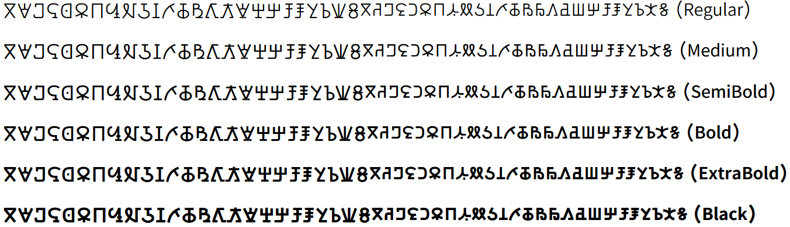

Kedebideri - Design
The Kedebideri font supports the Beria Erfe script which is used for the Zaghawa Beria language of Sudan and Chad.
This font was initially designed by a volunteer who chooses to remain anonymous, in cooperation with SIL Global and the Mission Protestante Franco-Suisse au Tchad.
The Latin glyphs were imported from Source Sans Pro at 103% and a weight of CSS 360 for Regular and CSS 670 for Black.
Six weights for this typeface family are included:
- Kedebideri Regular
- Kedebideri Medium
- Kedebideri SemiBold
- Kedebideri Bold
- Kedebideri ExtraBold
- Kedebideri Black
Type Samples
Type samples showing some of the inventory of glyphs can be found here: Kedebideri Type Sample.
One example of some text is shown below.
